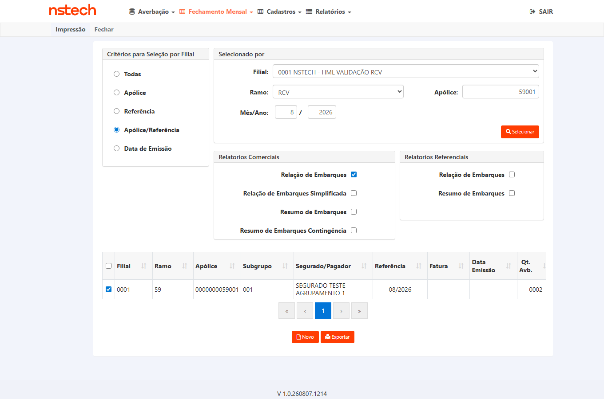
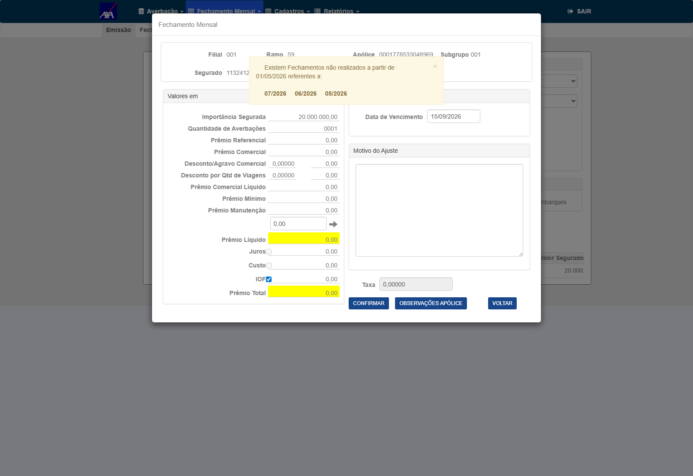
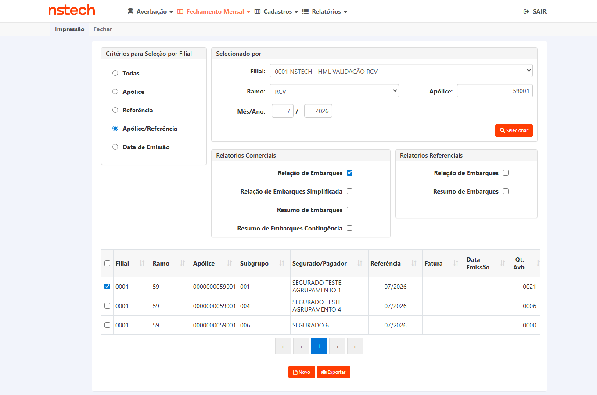

A Relação de Embarques do Fechamento deve retornar exatamente o tipo de documento averbado. Em 04/08, quando este plano foi escrito, a coluna "Tipo Documento" traduzia apenas três códigos e tudo o que não era um deles saía em branco. O fix subiu em HML em 04/08 (PR !1532) e a coluna passou a traduzir quatro — ver seções 3.1 e 3.2.
Como estava no código antes do fix — RelatorioFechamentoDomain.cs:1643:
switch (item.e_doc_ebq.ToString()) {
case "C": "CTE" case "N": "NF Eletrônica" case "O": "Outros"
default : "" // ← MDF-e cai aqui, e a coluna sai VAZIA
}Correção da premissa do card: a descrição diz "hoje só reconhece CTE e Outros", sugerindo
que o MDF-e estaria sendo classificado como "Outros". Não estava — ele caía no default
e a coluna vinha vazia. Também existe "NF Eletrônica" (código N), que o card não menciona.
Este box registra o estado do código em 04/08, antes da entrega — não o estado atual. Naquele momento, corrigir só o Fechamento (o que o card pedia) deixaria a Prévia mostrando em branco o mesmo dado — dois relatórios da mesma averbação divergindo. Era decisão de escopo e valia antes do desenvolvimento; foi levada ao dev nesses termos.
| Arquivo | Relatório | Traduzia em 04/08 | Saía em branco em 04/08 (pré-fix) |
|---|---|---|---|
RelatorioFechamentoDomain.cs:1643 | Relação de Embarques do Fechamento (alvo do card) | C · N · O | M · A · D · vazio |
RelatorioPreviaDomain.cs:2807 | Relação de Embarques da Prévia | C · N · O | M · A · D · vazio |
RelatorioDomain.cs:2280 | Comprovante/impressão da averbação | C · O | N · M · A · D · vazio |
Como terminou: o escopo foi ampliado na entrega. O PR !1532 (deploy em HML em
04/08 20:32 UTC, task #8007 Done) criou
/Domain/TipoDocumentoEmbarqueRcvLabel.cs e passou a chamá-lo nos dois relatórios —
RelatorioFechamentoDomain.cs:1646 e RelatorioPreviaDomain.cs:2808 —, o que atende a paridade
Fechamento×Prévia exigida pelo CA (seção 3.1). Medido em 07/08: 903/903 no Fechamento
(TOKIO) e 10/10 na Prévia (AXA), seção 3.2. A divergência antecipada aqui não se
materializou.
⚠️ O terceiro ponto (RelatorioDomain.cs:2280) não foi tocado pelo fix: ele não trata
nem N, então a expectativa é que NF-e continue saindo em branco no comprovante — defeito pré-existente,
independente deste card. Confirmação é o CT-REB-009, que segue PENDENTE.
O domínio de e_doc_ebq não foi lido do relatório (isso tornaria o teste uma
tautologia). Veio da tela onde o usuário escolhe o tipo — o formulário de averbação RCV
(NSSegApis/client/nsseg-portal/src/pages/averbacoes/ramo59/Ramo59FormPage.tsx:6-12):
e_doc_ebq | Rótulo no cadastro (fonte de verdade) | Rótulo no relatório antes do fix (04/08) | Situação hoje |
|---|---|---|---|
C | CT-e — Conhecimento de Transporte Eletrônico | CTE | ✅ ok — inalterado pelo fix |
N | NF-e — Nota Fiscal Eletrônica | NF Eletrônica | ✅ ok — inalterado pelo fix |
O | — (não está no formulário; vem do Conversor/legado) | Outros | ✅ ok — inalterado pelo fix |
M | MDF-e — Manifesto Eletrônico de Documentos Fiscais | (vazio) — era o defeito do card | ✅ passou a imprimir MDF-e desde o PR !1532 (04/08); medido em 07/08 — seção 3.2. Execução formal dos CTs segue PENDENTE. |
A | AWB — Air Waybill | (vazio) | ⚠️ segue sem tradução — mesma classe, fora do card |
D | D — Outro documento | (vazio) | ⚠️ segue sem tradução — mesma classe, fora do card |
⚠️ Note a assimetria de O × D: o relatório espera O para "Outros", mas o
formulário emite D para "Outro documento". Averbação criada pelo portal novo com "Outro documento"
aparece em branco.
In scope: coluna "Tipo Documento" da Relação de Embarques do Fechamento (ramo 59,
todas as seguradoras) — tradução de e_doc_ebq='M' para "MDF-e"; regressão dos códigos já
traduzidos (C, N, O); tratamento de código vazio; e a consistência com a
Prévia, que usa o mesmo campo.
Out of scope: demais colunas do relatório; o defeito pré-existente do
RelatorioDomain.cs com N (registrado aqui como achado, a decidir em card próprio); o
HTTP 500 do Tipo de Seleção "Todas" na TOKIO (defeito à parte, ver nota de automação).
Ramo: 59 (RC-V), conforme o CA. Ambientes: CITWEB HML — TOKIO e NSTECH (onde existe massa MDF-e) + AXA e NSTECH para a regressão dos tipos existentes.
Credenciais: sempre via .env
(HML_<SEGURADORA>_CITWEB_USER / _PASS) — nunca literal no script ou no plano.
Navegação (por clique, nunca por URL direta): login → Nacional →
Fechamento Mensal → Impressão → Tipo de Seleção
"Apólice/Referência" → informar apólice + referência → Selecionar → marcar a linha
do fechamento → Relação de Embarques → exportar .xlsx.
Contagens de tb_mov_avb_rcv_cit por e_doc_ebq (movimento fechado exige
u_fch_mes <> 0; a Relação do Fechamento só vê fechado):
| Cenário | Tenant | Massa exata |
|---|---|---|
| MDF-e (núcleo) | TOKIO | apólice 52831830001 · subgrupo 1 · referência 202605 ·
fechamento 29 → 903 averbações, 100% e_doc_ebq='M'
(zero de outros tipos). Em 04/08, antes do fix: 903 linhas com a coluna vazia — pós-fix,
903/903 saem com MDF-e (medição de 07/08, seção 3.2). |
| MDF-e (2º tenant, CA "todas as seguradoras") | NSTECH | apólice 19122025 · subgrupo 1 · referência 202512 ·
fechamento 13 → 6 averbações 'M' |
Regressão C e O | AXA | 13.582 com 'C' · 14.708 com 'O' |
Regressão N | NSTECH | 15.660 com 'N' |
| Borda — código em branco | TOKIO | 7 averbações com e_doc_ebq=' ' (espaço) |
Distribuição total de MDF-e na TOKIO: 903 em fechamento processado + 3.200 em movimento aberto (estes últimos servem à Prévia, CT-REB-008).
Quando este plano foi escrito (04/08) o fix ainda não estava em hml. O PR !1532
(7999-relacao-embarques-mdfe-hml → hml, merge f01c489af) já está
completed, e li o código direto do branch — não do clone local, que está em 14/05 e não tem o
fix. O fix criou /Domain/TipoDocumentoEmbarqueRcvLabel.cs, chamado nos dois relatórios:
RelatorioFechamentoDomain.cs:1646 e RelatorioPreviaDomain.cs:2808 — ambos na coluna 4,
o que confirma a paridade Fechamento×Prévia exigida pelo CA.
e_doc_ebq | Rótulo impresso | Linhas em HML | Bases |
|---|---|---|---|
C | CTE | 43.941 | 15 |
N | NF Eletrônica | 15.664 | 2 |
O | Outros | 72.270 | 16 |
M | MDF-e | 4.163 | 5 — TOKIO, NSTECH, AXA, KOVR e KOVR-ALFA |
default | "" (vazio) |
7 (código em branco) | 1 — TOKIO |
Três consequências para a execução:
"MDF-e" — o vocabulário do portal NSSeg, não "Manifesto" (CITNET) nem
"Outros". Resta à Produtos confirmar, não decidir do zero. Atualização de
05/08: nem a confirmação é mais necessária — o CA do
#7980, criado pela própria Produtos em
03/08, já fixa o vocabulário em "MDF-e" no combo e nos relatórios. O que segue pendente é o aval do
plano (Gate 2), não a decisão do rótulo.switch compara string e é case-sensitive, e o default devolve vazio
— isto é, um código novo volta a produzir exatamente o defeito que abriu o card, silenciosamente. Levantei isso
como risco e fui medir antes de reportar: não se materializa — varri as 16 bases com movimento
RCV (não só as 6 de 04/08) e não existe minúsculo nem 5º código. Quanto aos 7 registros em branco da
TOKIO: pela leitura do código (default → "") e pelos dados, permanece
esperado que continuem saindo com a coluna vazia — comportamento correto para um movimento sem tipo de
documento. ⚠️ Isto é conclusão de leitura de código e de banco, não de execução: quem confirma é
o CT-REB-006 — a contraprova obrigatória do risco Alto da seção 7 —, que segue
PENDENTE.Ao homologar o PBI #7980 ("Incluir opção MDF-e no campo Tipo Documento da Averbação RCV" — a entrada; este card é a saída), dois CTs de regressão cruzada caíram exatamente sobre a coluna que este PBI entregou. Ambos passaram em 07/08. Registro aqui por rastreabilidade: é evidência de outro card e não substitui a execução formal destes 10 CTs.
| O que foi medido | Onde | Resultado |
|---|---|---|
Relação de Embarques da PréviaRelatorioPreviaDomain.cs:2804 |
AXA HML · build V 1.0.260806.1708apólice 3112027 ·
ref 08/2026 |
10 de 10 linhas com a coluna D correta, conferidas linha a linha contra o banco pelo
número da averbação — M→MDF-e, C→CTE, N→NF Eletrônica,
O→Outros. Zero divergências. |
Relação de Embarques do FechamentoRelatorioFechamentoDomain.cs:1642 |
TOKIO HML · build V 1.0.260807.1214apólice 52831830001 ·
fechamento 29 |
903 de 903 linhas com MDF-e, em movimento fechado real e em volume.
Zero divergências. |
ℹ️ Sobre os números de linha desta tabela (1642 /
2804): são a numeração conforme lida em 07/08, pós-fix, e vêm transcritos do registro do
#7980. A seção 3.1 cita 1646 / 2808 nos mesmos arquivos, lidos em 05/08; a seção 8 e o box
do topo citam 1643 / 2807, que são as posições pré-fix. É o mesmo
call site em três leituras — a posição exata não altera nenhum veredito.
Onde estão os arquivos: os .xlsx exportados estão anexados ao card
#7980 e a conferência linha a linha está no plano dele (CTs 012 e 013). Nenhum arquivo foi anexado
a este card — por isso esta pasta não tem evidencias/.
O que isto NÃO faz: não aprova CT nenhum deste plano. CT-REB-001 e CT-REB-008 seguem PENDENTE — o Gate 2 nunca foi aprovado e a execução formal não começou. Se a Produtos aprovar o reaproveitamento proposto no card em 07/08, estes dois passam a APROVADO citando o anexo de origem no #7980; até lá o placar do topo permanece 0 aprovados · 0 reprovados · 10 pendentes.
testes-automatizados/sprint-11-citweb/bug-7884/ct_fmr_009_relatorios_fechamento.py já cobre
exatamente esta tela (Nacional → Fechamento Mensal → Impressão, export da Relação de Embarques sobre fechamento
processado), é multi-tenant por dict TENANTS e valida o .xlsx com openpyxl. A execução
destes CTs estende esse script em vez de criar outro do zero.
⚠️ Armadilha herdada e já documentada nele: com Tipo de Seleção "Todas" o POST
/Nacional/RelatorioFechamento/Selecionar responde HTTP 500 na TOKIO (na AXA responde
302). Por isso a navegação usa "Apólice/Referência". Esse 500 é defeito à parte — não confundir com
este card.
⚠️ Evidência obrigatória de CT de relatório: o próprio arquivo .xlsx salvo e
validado (não-vazio, formato válido, nº de linhas e o valor da coluna), anexado ao card — não basta screenshot nem
HTTP 2xx.
CA1: movimento MDF-e aparece como "MDF-e" no Excel. Este é o CT que discrimina o fix: antes do fix a coluna saía vazia.
52831830001 · subgrupo 1 · referência 202605 · fechamento 29 — 903 averbações com e_doc_ebq='M', confirmadas por SQL em 04/08. Fix implantado em HML desde 04/08/2026 (PR !1532 completed; #8007 Done; card em "Pronto para homologação") — a pré-condição de ambiente está satisfeita.0000000059001 · sub 001 · ref 08/2026 · fechamento 42.A evidência é o arquivo, e ele foi aberto e lido: COM-EMB-RCV-0000000059001-001-08-2026-00042.xlsx (18.464 B, aba RelacaoEmbarque), coluna Tipo de Documento (índice 3), 2 de 2 linhas conferidas contra o banco:
u_avb 2026000004 banco C exibido CTE u_avb 2026000005 banco M exibido MDF-e
⛔ Esta massa não existia — foi criada, e a criação é parte do resultado. Em 12/08 havia zero averbações fechadas com M nas duas bases, coerente com o #7981 (o servidor recusa gravar M, então nenhuma linha M passou por fechamento). Rodei o Fechamento Mensal via massa_fechar_subgrupo_com_mdfe.py. Dois aprendizados que ficam:
C e M tinham d_ano_mes_ref=202607 mas saída em agosto (06/08 e 07/08) — por isso ficaram fora do fechamento de julho e entraram no de agosto. E a emissão corrigiu o d_ano_mes_ref para 202608, o que confirma a regra;O que este CT NÃO cobre: o rótulo de N e do código vazio no fechamento. A massa para eles já existe (fechamento 41 da mesma apólice, ref 07/2026: 14 linhas O e 7 com tipo NUL) — falta medir, e é o próximo passo dos CT-REB-004 e CT-REB-006.


.env)52831830001, referência 05/2026; clicar Selecionar29 e clicar Relação de Embarques; exportar .xlsxSELECT e_doc_ebq, COUNT(*) FROM tb_mov_avb_rcv_cit WHERE u_apo_pnc=52831830001 AND d_ano_mes_ref=202605 AND u_fch_mes=29 GROUP BY e_doc_ebqMDF-e na coluna Tipo Documento — 0 (zero) em branco. O texto deve ser exatamente o do cadastro (MDF-e), não "MDFE", "Manifesto" nem "Outros". ⚠️ Se vier vazio, o fix do PR !1532 não alcançou este tenant/build; se vier "Outros", o fix classificou errado.Até a tarde de 04/08 este bloco dizia "aguardando o fix em HML (task #8007 'Análise e Desenvolvimento' em In Progress)", o que era verdade enquanto o dev ainda trabalhava — o plano é gerado antes da entrega, por regra. Às 20:32 UTC de 04/08 o José registrou no card o deploy em HML com smoke, a #8007 foi para Done e o PBI para "Pronto para homologação". Desde então o que segura a execução é apenas o Gate 2, e não o estado do ambiente.
CA3: "válido para todas as seguradoras, ramo 59". O fix é CORE, então precisa valer em outro tenant — e uma evidência de um tenant não vale pelo outro (lição registrada no #7762).
19122025 · subgrupo 1 · referência 202512 · fechamento 13 — 6 averbações com e_doc_ebq='M'.MDF-e, com o mesmo texto obtido na TOKIO. Divergência de rótulo entre seguradoras num fix CORE é REPROVADO.CA2: os tipos já existentes não podem mudar. C é o mais usado (13.582 averbações só na AXA).
e_doc_ebq='C' (13.582 disponíveis; a apólice/referência exata é descoberta na execução por SQL, sem ID fixo).u_fch_mes <> 0) com averbações 'C'.xlsxe_doc_ebq do bancoe_doc_ebq='C' exibe CTE — texto inalterado em relação ao comportamento anterior ao fix.CA2 para o código O (14.708 na AXA). É o candidato natural a ser "reaproveitado" por um fix apressado para o MDF-e — daí a prioridade P1.
e_doc_ebq='O' (14.708 disponíveis).O exibe "Outros"medido em 12/08/2026 no momento do FECHAMENTO: as 14 linhas com e_doc_ebq = O exibem Outros, sem exceção.
O cadastro escreve Outros (NS, ETC) e o relatório escreve Outros — o CT pede "Outros", então isso atende. Fica registrado que a abreviação existe aqui também, e é a mesma classe de decisão que a PO tomou no #7996 para o rótulo de N.
📄 COM-EMB-RCV-0000000059001-001-07-2026-00041.xlsx (20.465 B, aba RelacaoEmbarque, coluna Tipo de Documento índice 3) · 21 de 21 linhas conferidas contra o banco. Massa: TOKIO · apólice 0000000059001 · sub 001 · ref 07/2026 · fechamento 41.

'O''O' exibem Outros. ⚠️ Se passarem a exibir MDF-e, o fix confundiu os dois códigos — REPROVADO.CA2 para o terceiro código traduzido. O card não o menciona, mas ele existe e é o mais volumoso na NSTECH (15.660).
e_doc_ebq='N' (15.660 disponíveis).'N''N' exibem NF Eletrônica, texto inalterado.Averbação sem tipo de documento é um caso legítimo. Um fix que trate o default como MDF-e passaria no CT-REB-001 e corromperia estas linhas — este CT é a contraprova.
e_doc_ebq=' ' (espaço), confirmadas por SQL em 04/08.medido em 12/08/2026: as 7 linhas cujo e_doc_ebq é NUL (ASCII 0, não espaço nem NULL de banco) saem com a célula vazia — o que é exatamente o esperado deste CT.
E o detalhe que dá valor à medição: o vazio não caiu no default do helper, que resolveria para Outros (NS, ETC). Ou seja, o relatório distingue "código desconhecido" de "código ausente" em vez de inventar rótulo — e, sobretudo, não virou MDF-e, que era o risco nomeado no CT.
⚠️ O validador que reusei (do #7980) marca essas 7 linhas como divergência e imprime REPROVADO. Aquele veredito é do CT dele, cujo critério é o mapeamento do MDF-e e que por isso exige rótulo para todo código. Para este CT a ausência de rótulo é a condição de aprovação — li a tabela linha a linha em vez de aceitar o veredito emprestado.
📄 COM-EMB-RCV-0000000059001-001-07-2026-00041.xlsx (20.465 B, aba RelacaoEmbarque, coluna Tipo de Documento índice 3) · 21 de 21 linhas conferidas contra o banco. Massa: TOKIO · apólice 0000000059001 · sub 001 · ref 07/2026 · fechamento 41.
MDF-e, o fix tratou o default em vez de tratar o código M — REPROVADO, mesmo que o CT-REB-001 passe.O formulário de averbação RCV oferece 5 códigos; o relatório traduzia 3 antes desta entrega e hoje traduz 4 (C, N, O, M). O MDF-e saiu da lista com o PR !1532; seguem sem tradução A (AWB) e D (Outro documento), que continuam saindo em branco. Levantar isto antes do fix evitou um segundo card com a mesma causa — a decisão de escopo sobre A e D continua em aberto.
'A' nem 'D' em nenhum HML hoje (medido nos 6 tenants em 04/08) — nenhuma averbação foi criada com esses tipos. Se o escopo incluí-los, o QA cria a massa (averbação RCV com tipo AWB e com Outro documento), conforme a diretriz de HML.A e D entram neste card ou em card próprioAWB e Outro documento)Até 04/08 a Relação de Embarques da Prévia (RelatorioPreviaDomain.cs:2807) tinha uma cópia idêntica do switch: se o fix cobrisse só o Fechamento, a mesma averbação apareceria com tipo na Relação do Fechamento e em branco na da Prévia — foi exatamente esse tipo de duplicata que gerou defeito no #7762. O PR !1532 cobriu os dois relatórios (ambos chamam TipoDocumentoEmbarqueRcvLabel), e a Prévia foi medida em 10/10 na AXA em 07/08 pelo #7980 (seção 3.2). Este CT é a verificação formal dessa paridade em tela neste plano, e segue PENDENTE: a medição de 07/08 é evidência de outro card e não o substitui.
u_fch_mes=0), que é o que a Prévia enxerga.MDF-e, igual ao Fechamento. ⚠️ Se o Fechamento exibir e a Prévia não, o fix ficou incompleto — REPROVADO por inconsistência entre relatórios do mesmo dado.Documentar e medir o terceiro ponto de tradução — RelatorioDomain.cs:2280 — que trata apenas C e O. Ali NF-e já saía em branco em 04/08 e este ponto não foi tocado pelo PR !1532, então a expectativa é que continue assim — independente deste card. Quem confirma é este CT, ainda PENDENTE.
'N') — impressão/comprovante de uma averbação com NF-e.e_doc_ebq='N'Garantir que a mudança de um rótulo não alterou a estrutura do arquivo: cabeçalho, ordem/posição das colunas, quantidade de linhas e os totais do rodapé.
e_doc_ebq='M'. Qualquer mudança em contagem ou totais é REPROVADO.| Critério de aceite (do card) | CT(s) que cobrem | Resultado |
|---|---|---|
| Movimento MDF-e aparece como "MDF-e" no Excel | CT-REB-001 · CT-REB-002 | — |
| Tipos existentes continuam iguais | CT-REB-003 · CT-REB-004 · CT-REB-005 · CT-REB-010 | — |
| Válido para todas as seguradoras, ramo 59 | CT-REB-002 (2º tenant) + massa em TOKIO/NSTECH/AXA | — |
| Não declarado no card, levantado pelo QA: consistência com a Prévia | CT-REB-008 | — |
| Não declarado no card: demais códigos do domínio (A, D) e código vazio | CT-REB-006 · CT-REB-007 | — |
| Achado pré-existente: comprovante sem NF-e | CT-REB-009 | — |
Cobertura dos CAs declarados: 3/3 (100%) · 4 CTs adicionais cobrem risco que o card não previu.
| Total de CTs | 10 |
| P1 (bloqueante) | 6 — CT-REB-001, 002, 003, 004, 007, 008 |
| P2 (importante) | 4 — CT-REB-005, 006, 009, 010 |
| Tenants envolvidos | TOKIO (MDF-e + borda) · NSTECH (MDF-e + NF-e) · AXA (CTE + Outros) |
| Massa confirmada por SQL | Sim — 04/08/2026, 6 bases consultadas |
default em vez do código M (Alto): passaria no CT-REB-001 e
quebraria as averbações sem tipo. Mitigação: CT-REB-006 é a contraprova obrigatória.O.MDF-e no CA e
guarda os .xlsx da evidência cruzada de 07/08 (seção 3.2)7999-relacao-embarques-mdfe-hml → hml,
merge f01c489af, completed) — criou /Domain/TipoDocumentoEmbarqueRcvLabel.csNSSegApis/client/nsseg-portal/src/pages/averbacoes/ramo59/Ramo59FormPage.tsx:6-12RelatorioFechamentoDomain.cs:1643 · RelatorioPreviaDomain.cs:2807 ·
RelatorioDomain.cs:2280. Pós-fix a tradução mora em
/Domain/TipoDocumentoEmbarqueRcvLabel.cs, chamado nos dois primeiros; o terceiro não foi alterado.testes-automatizados/sprint-11-citweb/bug-7884/ct_fmr_009_relatorios_fechamento.py